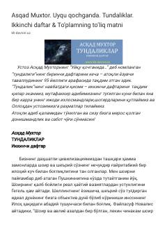

UQAsqad Muxtorning adabiy-falsafiy mushohadalari va hayotiy kuzatishlari jamlangan kundaliklar to'plami.
Ushbu asar taniqli yozuvchi Asqad Muxtorning hayotiy kuzatishlari, adabiy tahlillari va falsafiy mushohadalari jamlangan kundaliklar to'plamining ikkinchi qismidir. Muallif unda inson ruhiyati, ijodkorlik, klassik adabiyot va til madaniyati kabi turli mavzularda o'zining teran fikrlarini bayon etadi.